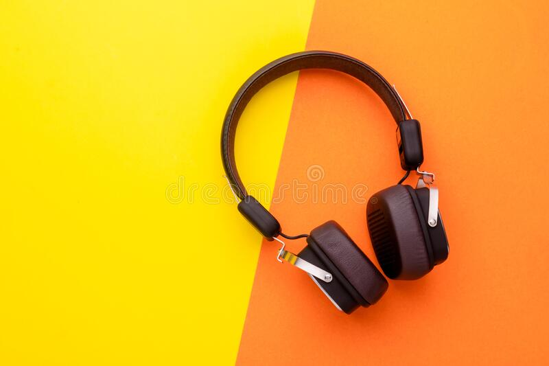

CASE STUDY BETWEEN GOOGLE LENS AND MOBILNET
GOOGLE LENS 
VS
GOOGLE LENS
VS
- Test Image - 
- Test Image -
- Test Image -
- Test Image -
Output on Google Lens - Headphones
Output on Mobilenet Model - Headphone, Mike
Result -
GOOGLE LENS ia more Accurate
Output on Google Lens - Canvas shoes
Output on Mobilenet Model - Running shoes
Result -
GOOGLE is more Accurate
Output on Google Lens - Water Bottle
Output on Mobilenet Model - Water Bottle
Result -
Draw
Output on Google Lens - Bed, Pillow, Blanket
Output on Mobilenet Model - Bathtub, Bathing Tub, Bath Tub
Result -
GOOGLE LENS is more Accurate
I have tested 4 images
GOOGLE LENS have pridictsd 3 of them more accuratel. And MOBILENET was less accurately. So, according to my case study GOOGLE LENS is more Accurate.
GOOGLE LENS have pridictsd 3 of them more accuratel. And MOBILENET was less accurately. So, according to my case study GOOGLE LENS is more Accurate.